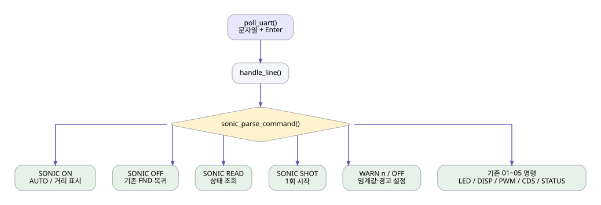

C 자료형·AMD 전용 함수·호출 구조
| 코드 기호 | 읽기·개념 | 실제 용도 |
|---|---|---|
u8 | 유 에이트 / 8비트 부호 없는 정수 | UART 1바이트, 명령 상태 |
u32 | 유 서티투 / 32비트 부호 없는 정수 | AXI 레지스터, 측정값, SEQ |
uint16_t | 유인트 식스틴 티 / 고정 16비트 정수 | 2~400 cm·경고 임계값 |
Xil_In32() | 자일 인 서티투 / 32비트 메모리 읽기 | 주소에 매핑된 STATUS·DIST_CM 읽기 |
Xil_Out32() | 자일 아웃 서티투 / 32비트 메모리 쓰기 | AUTO, WARN_CM, FND 레지스터 기록 |
XUartLite_RecvByte() | 엑스 유아트 라이트 리시브 바이트 / 1바이트 수신 | UART 한 글자 수신 |
XUartLite_IsReceiveEmpty() | ... 이즈 리시브 엠프티 / 수신 FIFO 비었는지 검사 | 논블로킹 명령 처리 |
SONIC_SEQ | 시퀀스 / 새 측정 완료 횟수 | 거리가 새로 갱신됐는지 확인 |
#error | 컴파일 타임 오류 | 미확정 AXI 주소로 빌드하지 않도록 차단 |
SDT | 에스디티 / System Device Tree(시스템 장치 트리) | 프로젝트 BSP에 따른 IRQ 설정 분기 |
서브 프로그램의 역할: sonic_parse_command()는 UART 텍스트를 검증하고, sonic_read_state()는 AXI 상태를 읽으며, fnd_commit()는 화면 우선순위에 따라 기존 FND IP에 값을 쓴다. service_sonic_display()는 완료 횟수(SEQ)가 증가할 때만 표시를 갱신한다.

구체적 코드 풀이
① Echo 폭 5800μs의 거리 환산
echo_us_o = 5800;
distance_cm_o = (5800 + 29) / 58; // 반올림 근사 → 100정수 연산의 오차를 줄이기 위해 58의 절반인 29를 더해 가까운 cm로 반올림한다. 실측 정확도가 1cm라는 의미는 아니다.
② 50cm 표시 전환
visible = sonic_visible_cm(st, cm); // valid면 거리, invalid면 0
Xil_Out32(P2_02_FND_BASEADDR + FND_VAL_REG, p2_to_bcd4(visible));
Xil_Out32(P2_02_FND_BASEADDR + FND_CTRL_REG,
(sonic_view_fresh && sonic_sample_valid(st, cm)) ? 1U : 0U);p2_to_bcd4(50)의 결과는 0x0050이다. 소프트웨어가 FND 자리 신호를 직접 토글하지 않고, 기존 02장 FND RTL이 하드웨어 시분할 스캔을 수행한다.
③ SONIC SHOT
Xil_Out32(P2_06_SONIC_BASEADDR + SONIC_CTRL,
((u32)sonic_warn_enabled << 2) | 2U);bit1의 1은 START 원샷 펄스이며, bit2는 LED 경고 허용 상태를 유지한다. 실제 Core는 busy 상태에서 새 요청을 받아서는 안 되므로 C가 READY 상태를 먼저 확인한다.
④ 읽기 상태
u32 st = Xil_In32(P2_06_SONIC_BASEADDR + SONIC_STATUS);
// bit1 VALID, bit2 TIMEOUT, bit3 RANGE_ERROR, bit5 UNSAFEVALID=0과 DIST_CM=0을 물체가 실제로 0cm에 있다고 판단하면 안 된다. 센서 물리 측정 범위의 최소값은 2cm다.
sw/main_p2_06.c
원본 소스: 코드 파일 열기 — 아래는 배포 파일과 동일한 전체 코드다.
/* P2-06: retain P2-01~05 and add HC-SR04 measurement + FND/LED2.
* NOTE: Base addresses, Interrupt ID/Parent MUST be read from actual BSP.
* This source intentionally rejects unknown constants before target build.
*/
#include "xparameters.h"
#include "xil_types.h" /* u8, u32, UINTPTR */
#include "xil_io.h" /* Xil_In32, Xil_Out32 */
#include "xuartlite_l.h" /* UART Lite byte functions + FIFO empty check */
#include "xstatus.h"
#include "xil_exception.h"
#ifdef SDT
#include "xinterrupt_wrap.h" /* SDT interrupt API */
#else
#include "xintc.h" /* Classic interrupt controller API */
#endif
#include "p2_03_logic.h"
#include "p2_04_pwm_logic.h" // Reused 04 PWM parser / duty calculation
#include "p2_05_cds_logic.h" // Existing AUTO/CDS command parser
#include "p2_06_sonic_logic.h" // (추가) Strict SONIC/WARN command parser
#ifndef P2_04_PWM_BASEADDR
#define P2_04_PWM_BASEADDR 0xFFFFFFFFU
#endif
#if P2_04_PWM_BASEADDR == 0xFFFFFFFFU
#error "Set P2_04_PWM_BASEADDR from CURRENT Vivado Address Editor/xparameters.h"
#endif
// (추가) Never guess the fifth AXI IP base: use CURRENT generated BSP.
#ifndef P2_05_CDS_BASEADDR
#define P2_05_CDS_BASEADDR 0xFFFFFFFFU
#endif
#if P2_05_CDS_BASEADDR == 0xFFFFFFFFU
#error "Set P2_05_CDS_BASEADDR from CURRENT Address Editor/xparameters.h"
#endif
#ifndef P2_01_LED_BASEADDR
#define P2_01_LED_BASEADDR 0xFFFFFFFFU
#endif
#ifndef P2_02_FND_BASEADDR
#define P2_02_FND_BASEADDR 0xFFFFFFFFU
#endif
#ifndef P2_03_BTN_BASEADDR
#define P2_03_BTN_BASEADDR 0xFFFFFFFFU
#endif
#if P2_01_LED_BASEADDR == 0xFFFFFFFFU || P2_02_FND_BASEADDR == 0xFFFFFFFFU || P2_03_BTN_BASEADDR == 0xFFFFFFFFU
#error "Set all three AXI IP addresses from CURRENT Address Editor/xparameters.h"
#endif
#if P2_01_LED_BASEADDR == P2_02_FND_BASEADDR || P2_01_LED_BASEADDR == P2_03_BTN_BASEADDR || P2_02_FND_BASEADDR == P2_03_BTN_BASEADDR
#error "Three user AXI IP base addresses must be unique"
#endif
#ifndef P2_03_BTN_INTR_ID
#error "Fill P2_03_BTN_INTR_ID from CURRENT generated BSP interrupt map"
#endif
#ifdef SDT
#ifndef P2_03_BTN_INTR_PARENT
#error "Fill P2_03_BTN_INTR_PARENT (SDT encoded interrupt parent) from actual BSP"
#endif
#else
#ifndef P2_03_INTC_DEVICE_ID
#error "Fill P2_03_INTC_DEVICE_ID from Classic BSP"
#endif
#endif
#if defined(XPAR_XUARTLITE_0_BASEADDR)
#define UART_BASEADDR XPAR_XUARTLITE_0_BASEADDR
#elif defined(XPAR_UARTLITE_0_BASEADDR)
#define UART_BASEADDR XPAR_UARTLITE_0_BASEADDR
#elif defined(XPAR_AXI_UARTLITE_0_BASEADDR)
#define UART_BASEADDR XPAR_AXI_UARTLITE_0_BASEADDR
#else
#error "Check UART Lite base macro in the generated xparameters.h"
#endif
#define FND_VAL_REG 0x00U
#define FND_CTRL_REG 0x04U
#define BTN_PENDING 0x00U
#define BTN_ENABLE 0x04U
#define BTN_PRESSED 0x08U
#define BTN_ID 0x0CU
#define BTN_COALESCED 0x10U
// P2-04 register offsets: 32-bit, byte-addressed.
#define PWM_PERIOD_CFG 0x00U
#define PWM_DUTY_CFG 0x04U
#define PWM_CTRL_CFG 0x08U
#define PWM_APPLY 0x0CU
#define PWM_STATUS 0x10U
#define PWM_PERIOD_ACT 0x14U
#define PWM_DUTY_ACT 0x18U
#define PWM_ID 0x1CU
#define PWM_IP_ID 0x00040001U
#define PWM_PERIOD_TICKS 100000U // AXI Clock이 실제 100MHz일 때 1kHz.
#if P2_04_PWM_BASEADDR == P2_01_LED_BASEADDR || \
P2_04_PWM_BASEADDR == P2_02_FND_BASEADDR || \
P2_04_PWM_BASEADDR == P2_03_BTN_BASEADDR
#error "New PWM IP base must differ from all prior IP addresses"
#endif
// (추가) P2-05 digital CdS AXI register map (32-bit byte offsets).
#define CDS_CTRL 0x00U
#define CDS_STATUS 0x04U
#define CDS_IP_ID 0x08U
#define CDS_FILTER 0x0CU
#define CDS_EXPECTED_ID 0x00050001U
#ifndef P2_06_SONIC_BASEADDR
#define P2_06_SONIC_BASEADDR 0xFFFFFFFFU
#endif
#if P2_06_SONIC_BASEADDR == 0xFFFFFFFFU
#error "Set P2_06_SONIC_BASEADDR from CURRENT Address Editor and BSP"
#endif
#if P2_05_CDS_BASEADDR == P2_01_LED_BASEADDR || \
P2_05_CDS_BASEADDR == P2_02_FND_BASEADDR || \
P2_05_CDS_BASEADDR == P2_03_BTN_BASEADDR || \
P2_05_CDS_BASEADDR == P2_04_PWM_BASEADDR
#error "P2-05 CdS IP base address must differ from P2-01~04"
#endif
// (추가) P2-06 AXI4-Lite offsets; all byte offsets.
#define SONIC_CTRL 0x00U
#define SONIC_STATUS 0x04U
#define SONIC_DIST_CM 0x08U
#define SONIC_ECHO_US 0x0CU
#define SONIC_WARN_CFG 0x10U
#define SONIC_SEQ 0x14U
#define SONIC_ID 0x18U
#define SONIC_CLK_HZ 0x1CU
#define SONIC_EXPECTED_ID 0x00060001U
#if P2_06_SONIC_BASEADDR == P2_01_LED_BASEADDR || \
P2_06_SONIC_BASEADDR == P2_02_FND_BASEADDR || \
P2_06_SONIC_BASEADDR == P2_03_BTN_BASEADDR || \
P2_06_SONIC_BASEADDR == P2_04_PWM_BASEADDR || \
P2_06_SONIC_BASEADDR == P2_05_CDS_BASEADDR
#error "P2-06 SONIC AXI base must be distinct from all previous IPs"
#endif
#define LINE_CAP 32U
static P2AppState app;
static u8 pwm_requested_percent = 0U;
// (추가) The C application owns control policy; RTL filters raw CdS signal.
static u8 cds_auto_enabled = 0U;
static u8 sonic_auto_enabled = 0U;
static u8 sonic_warn_enabled = 1U;
static u8 sonic_view = 0U; // 1: DIST(cm) FND view overrides VALUE/EVENTS.
static u8 sonic_view_fresh = 0U; // Blank stale result until next completion after ON.
static u32 sonic_seq_seen = 0U;
static u8 cds_dark_when_low = 1U; // Start assumption; verify DO via CDS READ.
static volatile u32 irq_counts[8]; // ISR writes monotonically; main reads.
static u32 handled_counts[8]; // Main-only processed counts.
#ifndef SDT
static XIntc intc;
#endif
static void uart_puts(const char *s)
{
while (*s) XUartLite_SendByte(UART_BASEADDR, (u8)*s++);
}
static void uart_hex32(u32 v)
{
const char hex[] = "0123456789ABCDEF";
int shift;
for (shift = 28; shift >= 0; shift -= 4)
XUartLite_SendByte(UART_BASEADDR, (u8)hex[(v >> shift) & 15U]);
}
static void uart_dec4(u32 value)
{
int d;
u32 divisors[4] = {1000U, 100U, 10U, 1U};
for (d = 0; d < 4; ++d) {
u32 n = (value / divisors[d]) % 10U;
XUartLite_SendByte(UART_BASEADDR, (u8)('0' + n));
}
}
// (추가) 0~4294967295를 선행 0 없이 UART에 출력.
static void uart_dec_u32(u32 value)
{
char tmp[10]; // u32 십진수 최대 10자리.
unsigned used = 0U;
do {
tmp[used++] = (char)('0' + (value % 10U));
value /= 10U;
} while (value != 0U);
while (used != 0U)
XUartLite_SendByte(UART_BASEADDR, (u8)tmp[--used]);
}
// (추가) 이전 설정이 반영 중이면 BUSY, 아니면 다음 주기 적용을 예약.
static int pwm_queue_percent(u8 percent)
{
u32 duty;
if ((Xil_In32(P2_04_PWM_BASEADDR + PWM_STATUS) & 1U) != 0U)
return 0; // 기존 Pending 설정을 덮지 않는다.
duty = pwm_duty_for_percent(PWM_PERIOD_TICKS, percent);
Xil_Out32(P2_04_PWM_BASEADDR + PWM_PERIOD_CFG, PWM_PERIOD_TICKS);
Xil_Out32(P2_04_PWM_BASEADDR + PWM_DUTY_CFG, duty);
Xil_Out32(P2_04_PWM_BASEADDR + PWM_CTRL_CFG, percent ? 1U : 0U);
Xil_Out32(P2_04_PWM_BASEADDR + PWM_APPLY, 1U);
pwm_requested_percent = percent;
return 1;
}
// (추가) Write configuration as one atomic 32-bit AXI register update.
static void cds_commit_control(void)
{
Xil_Out32(P2_05_CDS_BASEADDR + CDS_CTRL,
cds_control_word(cds_auto_enabled, cds_dark_when_low));
}
// (추가) Read sensor pins via AXI status, not by polling a physical GPIO.
static void cds_print_reading(void)
{
u32 bits = Xil_In32(P2_05_CDS_BASEADDR + CDS_STATUS);
uart_puts("CDS RAW="); uart_dec_u32(bits & 1U);
uart_puts(" DARK="); uart_dec_u32((bits >> 1) & 1U);
uart_puts(" VALID="); uart_dec_u32((bits >> 2) & 1U);
uart_puts(" GATE="); uart_dec_u32((bits >> 3) & 1U);
uart_puts(" AUTO="); uart_dec_u32((bits >> 4) & 1U);
uart_puts(" POL="); uart_puts((bits & (1U << 5)) ? "LOW" : "HIGH");
uart_puts("\r\n");
}
// (추가) 06장 STATUS는 최근 완료된 샘플(VALID/TIMEOUT/RANGE)을 보존.
// SEQ is a lightweight change marker; the HW has no atomic multiword latch.
static void sonic_read_state(u32 *status, u32 *cm, u32 *seq)
{
u32 a, b;
unsigned tries;
for (tries = 0; tries < 3U; ++tries) {
a = Xil_In32(P2_06_SONIC_BASEADDR + SONIC_SEQ);
*status = Xil_In32(P2_06_SONIC_BASEADDR + SONIC_STATUS);
*cm = Xil_In32(P2_06_SONIC_BASEADDR + SONIC_DIST_CM);
b = Xil_In32(P2_06_SONIC_BASEADDR + SONIC_SEQ);
if (a == b) { *seq = b; return; }
}
*seq = b; // Contended snapshot: STATUS logs must not claim atomicity.
}
static void sonic_commit_ctrl(void)
{
Xil_Out32(P2_06_SONIC_BASEADDR + SONIC_CTRL,
(u32)sonic_auto_enabled | ((u32)sonic_warn_enabled << 2));
}
static void sonic_print_reading(void)
{
u32 st, cm, seq, echo_us;
sonic_read_state(&st,&cm,&seq);
echo_us = Xil_In32(P2_06_SONIC_BASEADDR + SONIC_ECHO_US);
uart_puts("SONIC CM="); uart_dec_u32(cm);
uart_puts(" ECHO_US="); uart_dec_u32(echo_us);
uart_puts(" VALID="); uart_dec_u32((st >> 1) & 1U);
uart_puts(" TIMEOUT="); uart_dec_u32((st >> 2) & 1U);
uart_puts(" RANGE_ERROR="); uart_dec_u32((st >> 3) & 1U);
uart_puts(" BUSY="); uart_dec_u32(st & 1U);
uart_puts(" ALERT="); uart_dec_u32((st >> 4) & 1U);
uart_puts(" UNSAFE="); uart_dec_u32((st >> 5) & 1U);
uart_puts(" SEQ="); uart_dec_u32(seq);
uart_puts(" WARN_CM="); uart_dec_u32(
Xil_In32(P2_06_SONIC_BASEADDR + SONIC_WARN_CFG));
uart_puts("\r\n");
}
static void fnd_commit(void)
{
if (sonic_view) {
u32 st, cm, seq;
uint16_t visible;
sonic_read_state(&st,&cm,&seq);
visible = sonic_visible_cm(st,cm);
// (추가) D3..D0: decimal 0002..0400 cm; no unit/dot hardware.
// Invalid/timeout => FND blank, not a misleading '0000'.
Xil_Out32(P2_02_FND_BASEADDR + FND_VAL_REG, p2_to_bcd4(visible));
Xil_Out32(P2_02_FND_BASEADDR + FND_CTRL_REG,
(sonic_view_fresh && sonic_sample_valid(st,cm)) ? 1U : 0U);
return;
}
// (유지) P2-03 VALUE/EVENTS shown when SONIC OFF.
Xil_Out32(P2_02_FND_BASEADDR + FND_VAL_REG,
p2_to_bcd4(p2_visible_decimal(&app)));
Xil_Out32(P2_02_FND_BASEADDR + FND_CTRL_REG, (u32)app.display_on);
}
static void service_sonic_display(void)
{
u32 seq = Xil_In32(P2_06_SONIC_BASEADDR + SONIC_SEQ);
if (seq != sonic_seq_seen) {
sonic_seq_seen = seq;
if (sonic_view) { sonic_view_fresh = 1U; fnd_commit(); }
}
}
// Level interrupt: read PENDING, acknowledge W1C, count each asserted type.
static void btn_irq_handler(void *unused)
{
u32 pending;
unsigned i;
(void)unused;
pending = Xil_In32(P2_03_BTN_BASEADDR + BTN_PENDING) & 0xFFU;
if (!pending) return;
Xil_Out32(P2_03_BTN_BASEADDR + BTN_PENDING, pending); // W1C
for (i = 0; i < 8U; ++i)
if (pending & (1U << i)) irq_counts[i]++;
}
static int setup_button_interrupt(void)
{
int status;
#ifdef SDT
// The physical interrupt ID and parent are project-specific.
status = XSetupInterruptSystem(0, (void *)btn_irq_handler,
P2_03_BTN_INTR_ID, (UINTPTR)P2_03_BTN_INTR_PARENT,
XINTERRUPT_DEFAULT_PRIORITY);
#else
status = XIntc_Initialize(&intc, P2_03_INTC_DEVICE_ID);
if (status != XST_SUCCESS) return status;
status = XIntc_Connect(&intc, P2_03_BTN_INTR_ID,
(XInterruptHandler)btn_irq_handler, 0);
if (status != XST_SUCCESS) return status;
status = XIntc_Start(&intc, XIN_REAL_MODE);
if (status != XST_SUCCESS) return status;
XIntc_Enable(&intc, P2_03_BTN_INTR_ID);
Xil_ExceptionInit();
Xil_ExceptionRegisterHandler(XIL_EXCEPTION_ID_INT,
(Xil_ExceptionHandler)XIntc_InterruptHandler, &intc);
Xil_ExceptionEnable();
#endif
return status;
}
static void print_status(void)
{
u32 led = Xil_In32(P2_01_LED_BASEADDR);
u32 fnd_bcd = Xil_In32(P2_02_FND_BASEADDR + FND_VAL_REG);
u32 fnd_ctrl = Xil_In32(P2_02_FND_BASEADDR + FND_CTRL_REG);
u32 pressed = Xil_In32(P2_03_BTN_BASEADDR + BTN_PRESSED);
u32 pending = Xil_In32(P2_03_BTN_BASEADDR + BTN_PENDING);
u32 lost = Xil_In32(P2_03_BTN_BASEADDR + BTN_COALESCED);
uart_puts("STATUS LED="); uart_puts((led & 1U) ? "ON" : "OFF");
uart_puts(" REG0=0x"); uart_hex32(led);
uart_puts(" DISP="); uart_dec4(p2_visible_decimal(&app));
uart_puts((fnd_ctrl & 1U) ? " ON" : " OFF");
uart_puts(" MODE="); uart_puts(app.mode ? "EVENTS" : "VALUE");
uart_puts(" VALUE="); uart_dec4(app.value);
uart_puts(" EVENTS="); uart_dec4(app.event_count);
uart_puts(" FND_REG0=0x"); uart_hex32(fnd_bcd);
uart_puts(" BTN_PRESSED=0x"); uart_hex32(pressed);
uart_puts(" BTN_PENDING=0x"); uart_hex32(pending);
uart_puts(" COALESCED=0x"); uart_hex32(lost);
// (추가) 03장 STATUS 전체를 유지하고 PWM 상태를 뒤에 추가.
{
u32 flags = Xil_In32(P2_04_PWM_BASEADDR + PWM_STATUS);
u32 p = Xil_In32(P2_04_PWM_BASEADDR + PWM_PERIOD_ACT);
u32 d = Xil_In32(P2_04_PWM_BASEADDR + PWM_DUTY_ACT);
u32 pct = p ? (u32)(((uint64_t)d * 100U) / p) : 0U;
uart_puts(" PWM_SET="); uart_dec_u32(pwm_requested_percent);
uart_puts("% PWM_ACTIVE="); uart_dec_u32(pct);
uart_puts("% PWM_PENDING="); uart_puts((flags & 1U) ? "1" : "0");
uart_puts(" PWM_ENABLE="); uart_puts((flags & (1U << 8)) ? "1" : "0");
uart_puts(" PWM_LED=1");
}
// (추가) Append CdS state without removing 04 status fields.
{
u32 bits = Xil_In32(P2_05_CDS_BASEADDR + CDS_STATUS);
uart_puts(" CDS_RAW="); uart_dec_u32(bits & 1U);
uart_puts(" CDS_DARK="); uart_dec_u32((bits >> 1) & 1U);
uart_puts(" CDS_VALID="); uart_dec_u32((bits >> 2) & 1U);
uart_puts(" CDS_GATE="); uart_dec_u32((bits >> 3) & 1U);
uart_puts(" CDS_AUTO="); uart_dec_u32((bits >> 4) & 1U);
uart_puts(" CDS_POL="); uart_puts((bits & (1U << 5)) ? "LOW" : "HIGH");
}
// (추가) Append 06 status fields; do not remove 01~05 fields.
{
u32 st, cm, seq;
sonic_read_state(&st,&cm,&seq);
uart_puts(" SONIC_VIEW="); uart_puts(sonic_view ? "DIST" : "VALUE/EVENTS");
uart_puts(" SONIC_CM="); uart_dec_u32(cm);
uart_puts(" SONIC_VALID="); uart_dec_u32((st >> 1) & 1U);
uart_puts(" SONIC_TIMEOUT="); uart_dec_u32((st >> 2) & 1U);
uart_puts(" SONIC_RANGE="); uart_dec_u32((st >> 3) & 1U);
uart_puts(" SONIC_ALERT="); uart_dec_u32((st >> 4) & 1U);
uart_puts(" SONIC_UNSAFE="); uart_dec_u32((st >> 5) & 1U);
uart_puts(" SONIC_SEQ="); uart_dec_u32(seq);
}
uart_puts("\r\n");
}
static void handle_line(const char *line)
{
uint16_t value = 0;
u8 pwm_percent = 0U;
// (추가) SONIC / WARN commands are parsed before legacy commands.
uint16_t warn_cm=0U;
SonicCommand sonic_cmd = sonic_parse_command(line,&warn_cm);
CdsCommand cds_cmd = cds_parse_command(line);
PwmParseResult pwm_cmd = pwm_parse_command(line, &pwm_percent);
P2Command cmd;
if (sonic_cmd != SONIC_NOT_COMMAND) {
switch (sonic_cmd) {
case SONIC_ON:
sonic_seq_seen = Xil_In32(P2_06_SONIC_BASEADDR + SONIC_SEQ);
sonic_view_fresh=0U; sonic_auto_enabled=1U; sonic_view=1U;
sonic_commit_ctrl(); fnd_commit();
uart_puts("OK SONIC ON (FND DIST cm)\r\n"); break;
case SONIC_OFF:
sonic_auto_enabled=0U; sonic_view=0U; sonic_view_fresh=0U;
sonic_commit_ctrl(); fnd_commit();
uart_puts("OK SONIC OFF (FND VALUE/EVENTS restored)\r\n"); break;
case SONIC_READ: sonic_print_reading(); break;
case SONIC_SHOT:
if (sonic_auto_enabled ||
((Xil_In32(P2_06_SONIC_BASEADDR + SONIC_STATUS) >> 8) & 1U)==0U) {
uart_puts("BUSY: SONIC SHOT unavailable; retry or SONIC OFF\r\n");
} else {
// W1P START bit1; preserve WARN_EN bit2, AUTO remains off.
Xil_Out32(P2_06_SONIC_BASEADDR + SONIC_CTRL,
((u32)sonic_warn_enabled << 2) | 2U);
uart_puts("OK SONIC SHOT QUEUED; use SONIC READ\r\n");
}
break;
case SONIC_WARN_CM:
Xil_Out32(P2_06_SONIC_BASEADDR + SONIC_WARN_CFG, warn_cm);
sonic_warn_enabled=1U; sonic_commit_ctrl();
uart_puts("OK WARN ");uart_dec_u32(warn_cm);uart_puts(" CM\r\n"); break;
case SONIC_WARN_OFF:
sonic_warn_enabled=0U; sonic_commit_ctrl();
uart_puts("OK WARN OFF (UNSAFE status remains active)\r\n"); break;
default: uart_puts("ERROR: SONIC ON/OFF/READ/SHOT | WARN 1..400/OFF\r\n");
}
return;
}
if (cds_cmd != CDS_NOT_COMMAND) {
switch (cds_cmd) {
case CDS_AUTO_ON:
cds_auto_enabled=1U; cds_commit_control();
uart_puts("OK AUTO ON (PWM duty retained)\r\n"); break;
case CDS_AUTO_OFF:
cds_auto_enabled=0U; cds_commit_control();
uart_puts("OK AUTO OFF (PWM manual)\r\n"); break;
case CDS_POL_LOW:
cds_dark_when_low=1U; cds_commit_control();
uart_puts("OK CDS POL LOW\r\n"); break;
case CDS_POL_HIGH:
cds_dark_when_low=0U; cds_commit_control();
uart_puts("OK CDS POL HIGH\r\n"); break;
case CDS_READ:
cds_print_reading(); break;
default:
uart_puts("ERROR: AUTO ON | AUTO OFF | CDS READ | CDS POL LOW | CDS POL HIGH\r\n");
break;
}
return;
}
if (pwm_cmd != PWM_NOT_COMMAND) {
if (pwm_cmd == PWM_INVALID) {
uart_puts("ERROR: PWM 0..100 (decimal, no leading zeroes)\r\n");
} else if (!pwm_queue_percent(pwm_percent)) {
uart_puts("BUSY: previous PWM update pending; retry\r\n");
} else {
uart_puts("OK PWM "); uart_dec_u32(pwm_percent);
uart_puts(" QUEUED\r\n"); // 실제 출력은 다음 주기 경계에서 반영됨.
}
return;
}
cmd = p2_parse_command(line, &value);
switch (cmd) {
case P2_CMD_LED_ON:
Xil_Out32(P2_01_LED_BASEADDR, 1U);
uart_puts("OK LED ON\r\n"); break;
case P2_CMD_LED_OFF:
Xil_Out32(P2_01_LED_BASEADDR, 0U);
uart_puts("OK LED OFF\r\n"); break;
case P2_CMD_DISP_VALUE:
p2_set_disp(&app, value); fnd_commit();
uart_puts("OK DISP "); uart_dec4(value); uart_puts("\r\n"); break;
case P2_CMD_DISP_OFF:
app.display_on = 0; fnd_commit(); uart_puts("OK DISP OFF\r\n"); break;
case P2_CMD_STATUS:
print_status(); break;
default:
uart_puts("ERROR: LED ON/OFF | DISP dddd/OFF | PWM 0..100 | AUTO ON/OFF | CDS READ/POL | SONIC ON/OFF/READ/SHOT | WARN 1..400/OFF | STATUS\r\n");
}
}
static void poll_uart(void)
{
static char line[LINE_CAP];
static u32 used = 0;
static int invalid = 0;
static int overflow = 0;
u8 ch;
if (XUartLite_IsReceiveEmpty(UART_BASEADDR)) return;
ch = XUartLite_RecvByte(UART_BASEADDR);
if (ch == '\r' || ch == '\n') {
line[used] = '\0';
if (overflow) uart_puts("ERROR: line too long\r\n");
else if (invalid) uart_puts("ERROR: invalid ASCII\r\n");
else if (used) handle_line(line);
used = 0; overflow = 0; invalid = 0;
return; // CRLF second terminator is ignored.
}
if (ch < 0x20U || ch > 0x7EU) { invalid = 1; return; }
if (used < LINE_CAP-1U) line[used++] = (char)ch;
else overflow = 1;
}
static void service_button_events(void)
{
unsigned i;
for (i = 0; i < 8U; ++i) {
// Each 32-bit read is atomic on the target 32-bit CPU. ISR only increments.
u32 seen = irq_counts[i];
while (handled_counts[i] != seen) {
handled_counts[i]++;
p2_apply_button(&app, i);
fnd_commit();
}
}
}
int main(void)
{
int status;
unsigned i;
p2_init(&app);
for (i=0; i<8U; ++i) { irq_counts[i]=0U; handled_counts[i]=0U; }
Xil_Out32(P2_03_BTN_BASEADDR + BTN_ENABLE, 0U); // Mask IRQ while setting up.
Xil_Out32(P2_03_BTN_BASEADDR + BTN_PENDING, 0xFFU); // Clear stale events.
Xil_Out32(P2_03_BTN_BASEADDR + BTN_COALESCED, 0xFFU); // Clear stale loss flags.
if (Xil_In32(P2_03_BTN_BASEADDR + BTN_ID) != 0x00030001U) {
uart_puts("ERROR: button IP identity mismatch\r\n"); return XST_FAILURE;
}
// (추가) P2-05 identity check BEFORE enabling automatic operation.
if (Xil_In32(P2_05_CDS_BASEADDR + CDS_IP_ID) != CDS_EXPECTED_ID) {
uart_puts("ERROR: CdS IP identity mismatch\r\n");
return XST_FAILURE;
}
cds_auto_enabled = 0U; cds_dark_when_low = 1U;
cds_commit_control(); // Power-on always begins in manual bypass mode.
// (추가) Validate 06 IP before enabling a continuous trigger.
if (Xil_In32(P2_06_SONIC_BASEADDR + SONIC_ID) != SONIC_EXPECTED_ID) {
uart_puts("ERROR: HC-SR04 IP identity mismatch\r\n");
return XST_FAILURE;
}
sonic_auto_enabled=0U; sonic_warn_enabled=1U; sonic_view=0U; sonic_view_fresh=0U;
Xil_Out32(P2_06_SONIC_BASEADDR + SONIC_WARN_CFG, 20U);
sonic_commit_ctrl();
sonic_seq_seen=Xil_In32(P2_06_SONIC_BASEADDR + SONIC_SEQ);
// (추가) IP ID를 확인하고 시작할 때 PWM OFF를 예약.
if (Xil_In32(P2_04_PWM_BASEADDR + PWM_ID) != PWM_IP_ID) {
uart_puts("ERROR: PWM IP identity mismatch\r\n");
return XST_FAILURE;
}
Xil_Out32(P2_04_PWM_BASEADDR + PWM_PERIOD_CFG, PWM_PERIOD_TICKS);
Xil_Out32(P2_04_PWM_BASEADDR + PWM_DUTY_CFG, 0U);
Xil_Out32(P2_04_PWM_BASEADDR + PWM_CTRL_CFG, 0U);
Xil_Out32(P2_04_PWM_BASEADDR + PWM_APPLY, 1U);
fnd_commit();
status = setup_button_interrupt();
if (status != XST_SUCCESS) {
uart_puts("ERROR: interrupt initialization failed\r\n");
return XST_FAILURE;
}
Xil_Out32(P2_03_BTN_BASEADDR + BTN_ENABLE, 0xFFU);
uart_puts("P2-06: HC-SR04 DIST + near/fault LED2; P2-01..05 retained\r\n");
uart_puts("UART: SONIC ON/OFF/READ/SHOT | WARN 1..400/OFF | LED ON/OFF | DISP 1234/OFF | PWM 0..100 | AUTO ON/OFF | CDS READ/POL LOW/HIGH | STATUS\r\n");
while (1) {
poll_uart(); // Non-blocking: do not starve event processing.
service_button_events();
service_sonic_display(); // (추가) Refresh FND once per completed sample.
}
}sw/p2_06_sonic_logic.h
원본 소스: 코드 파일 열기 — 아래는 배포 파일과 동일한 전체 코드다.
#ifndef P2_06_SONIC_LOGIC_H
#define P2_06_SONIC_LOGIC_H
#include <stdint.h>
// Strict ASCII command grammar; never guess a sensor value from text.
typedef enum {
SONIC_NOT_COMMAND=0, SONIC_ON, SONIC_OFF, SONIC_READ, SONIC_SHOT,
SONIC_WARN_CM, SONIC_WARN_OFF, SONIC_INVALID
} SonicCommand;
SonicCommand sonic_parse_command(const char *line, uint16_t *warn_cm);
// Only a completed, valid 2..400cm reading can be displayed.
uint16_t sonic_visible_cm(uint32_t status, uint32_t distance);
// bit1 valid. Invalid/timeout/out-of-range => 0 (blank FND externally).
int sonic_sample_valid(uint32_t status, uint32_t distance);
#endifsw/p2_06_sonic_logic.c
원본 소스: 코드 파일 열기 — 아래는 배포 파일과 동일한 전체 코드다.
#include "p2_06_sonic_logic.h"
#include <string.h>
SonicCommand sonic_parse_command(const char *line, uint16_t *warn_cm)
{
unsigned value=0U, n=0U;
const char *p;
if (!line || !warn_cm) return SONIC_INVALID;
if (strcmp(line, "SONIC ON") == 0) return SONIC_ON;
if (strcmp(line, "SONIC OFF") == 0) return SONIC_OFF;
if (strcmp(line, "SONIC READ") == 0) return SONIC_READ;
if (strcmp(line, "SONIC SHOT") == 0) return SONIC_SHOT;
if (strcmp(line, "WARN OFF") == 0) return SONIC_WARN_OFF;
if (strncmp(line, "SONIC", 5U) == 0 ||
strncmp(line, "WARN", 4U) == 0) {
if (strncmp(line, "WARN ", 5U) != 0) return SONIC_INVALID;
p = line + 5;
if (*p < '1' || *p > '9') return SONIC_INVALID;
while (*p) {
if (*p < '0' || *p > '9' || ++n > 3U) return SONIC_INVALID;
value = value*10U+(unsigned)(*p-'0');
++p;
}
if (value > 400U) return SONIC_INVALID;
*warn_cm=(uint16_t)value;
return SONIC_WARN_CM;
}
return SONIC_NOT_COMMAND;
}
int sonic_sample_valid(uint32_t status, uint32_t distance)
{
return ((status & (1U<<1)) != 0U && distance >= 2U && distance <= 400U);
}
uint16_t sonic_visible_cm(uint32_t status, uint32_t distance)
{
return sonic_sample_valid(status,distance) ? (uint16_t)distance : 0U;
}sw/p2_05_cds_logic.h
원본 소스: 코드 파일 열기 — 아래는 배포 파일과 동일한 전체 코드다.
#ifndef P2_05_CDS_LOGIC_H
#define P2_05_CDS_LOGIC_H
#include <stdint.h>
// Reusable exact-match ASCII command parser, independent of AMD BSP.
typedef enum {
CDS_NOT_COMMAND=0, CDS_AUTO_ON, CDS_AUTO_OFF,
CDS_POL_LOW, CDS_POL_HIGH, CDS_READ, CDS_INVALID
} CdsCommand;
CdsCommand cds_parse_command(const char *line);
uint32_t cds_control_word(uint8_t auto_on, uint8_t dark_when_low);
uint8_t cds_light_on(uint8_t pwm_high, uint8_t auto_on,
uint8_t dark_valid, uint8_t dark_filtered);
#endifsw/p2_05_cds_logic.c
원본 소스: 코드 파일 열기 — 아래는 배포 파일과 동일한 전체 코드다.
#include "p2_05_cds_logic.h"
#include <string.h>
CdsCommand cds_parse_command(const char *line)
{
if (strcmp(line, "AUTO ON") == 0) return CDS_AUTO_ON;
if (strcmp(line, "AUTO OFF") == 0) return CDS_AUTO_OFF;
if (strcmp(line, "CDS POL LOW") == 0) return CDS_POL_LOW;
if (strcmp(line, "CDS POL HIGH") == 0) return CDS_POL_HIGH;
if (strcmp(line, "CDS READ") == 0) return CDS_READ;
// (추가) AUTO/CDS로 시작하지만 정해진 문자열과 다르면 명시적 오류.
if (strncmp(line, "AUTO", 4) == 0 || strncmp(line, "CDS", 3) == 0)
return CDS_INVALID;
return CDS_NOT_COMMAND;
}
uint32_t cds_control_word(uint8_t auto_on, uint8_t dark_when_low)
{
// bit1: low -> dark. bit0: allow CdS gating.
return ((dark_when_low ? 1U : 0U) << 1) | (auto_on ? 1U : 0U);
}
uint8_t cds_light_on(uint8_t pwm_high, uint8_t auto_on,
uint8_t dark_valid, uint8_t dark_filtered)
{
// Matches auto_light_controller.v; AUTO ON cannot override PWM=0%.
return (uint8_t)((pwm_high != 0U) &&
((auto_on == 0U) || ((dark_valid != 0U) && (dark_filtered != 0U))));
}sw/p2_04_pwm_logic.h
원본 소스: 코드 파일 열기 — 아래는 배포 파일과 동일한 전체 코드다.
#ifndef P2_04_PWM_LOGIC_H
#define P2_04_PWM_LOGIC_H
#include <stdint.h>
typedef enum {PWM_NOT_COMMAND=0, PWM_VALID, PWM_INVALID} PwmParseResult;
// Accept exactly "PWM 0".."PWM 100" with no extra spaces/leading zeroes.
PwmParseResult pwm_parse_command(const char *line, uint8_t *percent);
uint32_t pwm_duty_for_percent(uint32_t period, uint8_t percent);
#endifsw/p2_04_pwm_logic.c
원본 소스: 코드 파일 열기 — 아래는 배포 파일과 동일한 전체 코드다.
#include "p2_04_pwm_logic.h"
#include <string.h>
PwmParseResult pwm_parse_command(const char *line, uint8_t *percent)
{
unsigned value = 0U;
const char *p;
// (유지) 기존 LED/DISP 명령은 p2_parse_command()에서 처리.
if (strncmp(line, "PWM", 3) != 0) return PWM_NOT_COMMAND;
if (line[3] != ' ') return PWM_INVALID;
p = line + 4;
if (*p < '0' || *p > '9') return PWM_INVALID;
if (*p == '0' && p[1] != '\0') return PWM_INVALID;
while (*p >= '0' && *p <= '9') {
value = 10U * value + (unsigned)(*p - '0');
if (value > 100U) return PWM_INVALID; // 100 초과는 곧바로 차단해 오버플로 방지.
++p;
}
if (*p != '\0') return PWM_INVALID;
*percent = (uint8_t)value;
return PWM_VALID;
}
uint32_t pwm_duty_for_percent(uint32_t period, uint8_t percent)
{
// (추가) 주기값 × 퍼센트의 곱셈을 64비트로 수행.
if (percent > 100U) return period; // 방어적 상한 처리. UART parser에서는 오류로 차단.
return (uint32_t)(((uint64_t)period * percent) / 100U);
}sw/p2_03_logic.h
원본 소스: 코드 파일 열기 — 아래는 배포 파일과 동일한 전체 코드다.
#ifndef P2_03_LOGIC_H
#define P2_03_LOGIC_H
#include <stdint.h>
// Board-independent application state and event semantics (testable on PC).
typedef struct {
uint16_t value; // 0000..9999, used in VALUE mode
uint16_t event_count; // 0000..9999, used in EVENTS mode
uint8_t mode; // 0: VALUE, 1: EVENTS
uint8_t display_on; // 0/1, independent of mode
} P2AppState;
typedef enum {
P2_CMD_INVALID = 0, P2_CMD_LED_ON, P2_CMD_LED_OFF,
P2_CMD_STATUS, P2_CMD_DISP_OFF, P2_CMD_DISP_VALUE
} P2Command;
void p2_init(P2AppState *s);
void p2_apply_button(P2AppState *s, unsigned event_bit);
void p2_set_disp(P2AppState *s, uint16_t value);
uint16_t p2_visible_decimal(const P2AppState *s);
uint16_t p2_to_bcd4(uint16_t value);
P2Command p2_parse_command(const char *text, uint16_t *disp_value);
#endifsw/p2_03_logic.c
원본 소스: 코드 파일 열기 — 아래는 배포 파일과 동일한 전체 코드다.
#include "p2_03_logic.h"
#include <string.h>
void p2_init(P2AppState *s)
{
s->value = 0; s->event_count = 0;
s->mode = 0; s->display_on = 0; // Same FND reset-off policy as P2-02.
}
static uint16_t wrap_10000(int value)
{
value %= 10000;
if (value < 0) value += 10000;
return (uint16_t)value;
}
void p2_apply_button(P2AppState *s, unsigned event_bit)
{
// Bit 0..3 short U/D/L/R; 4..7 long U/D/L/R.
if (event_bit > 7U) return;
s->event_count = wrap_10000((int)s->event_count + 1);
switch (event_bit) {
case 0: s->value = wrap_10000((int)s->value + 1); break;
case 1: s->value = wrap_10000((int)s->value - 1); break;
case 2: s->mode ^= 1U; break;
case 3: s->display_on ^= 1U; break;
case 4: s->value = wrap_10000((int)s->value + 100); break;
case 5: s->value = wrap_10000((int)s->value - 100); break;
case 6: s->value = 0; break;
case 7: p2_init(s); s->display_on = 1; break; // Reset all, show 0000.
default: break;
}
}
void p2_set_disp(P2AppState *s, uint16_t value)
{
s->value = value; s->mode = 0; s->display_on = 1;
}
uint16_t p2_visible_decimal(const P2AppState *s)
{
return (s->mode == 0U) ? s->value : s->event_count;
}
uint16_t p2_to_bcd4(uint16_t value)
{
// 0050 -> 0x0050; do not use binary integer 50 as FND raw digits.
uint16_t thousands = (uint16_t)(value / 1000U);
uint16_t hundreds = (uint16_t)((value / 100U) % 10U);
uint16_t tens = (uint16_t)((value / 10U) % 10U);
uint16_t ones = (uint16_t)(value % 10U);
return (uint16_t)((thousands << 12) | (hundreds << 8) |
(tens << 4) | ones);
}
P2Command p2_parse_command(const char *text, uint16_t *disp_value)
{
unsigned i;
unsigned v = 0;
if (strcmp(text, "LED ON") == 0) return P2_CMD_LED_ON;
if (strcmp(text, "LED OFF") == 0) return P2_CMD_LED_OFF;
if (strcmp(text, "STATUS") == 0) return P2_CMD_STATUS;
if (strcmp(text, "DISP OFF") == 0) return P2_CMD_DISP_OFF;
if (strlen(text) != 9U || memcmp(text, "DISP ", 5U) != 0)
return P2_CMD_INVALID;
for (i = 5U; i < 9U; ++i) {
if (text[i] < '0' || text[i] > '9') return P2_CMD_INVALID;
v = v * 10U + (unsigned)(text[i] - '0');
}
*disp_value = (uint16_t)v;
return P2_CMD_DISP_VALUE;
}